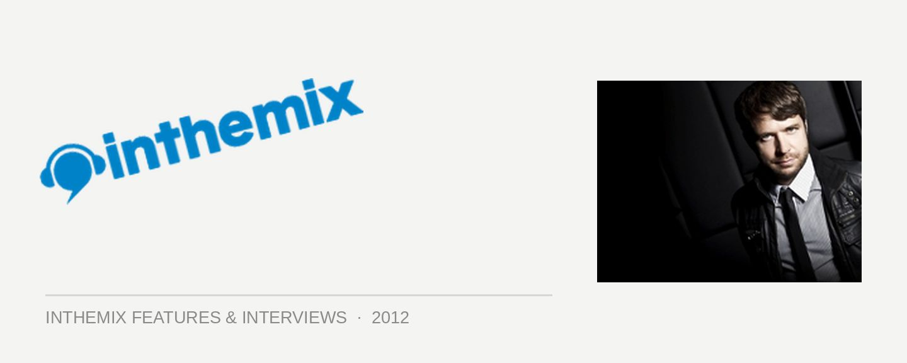

Lange: "A lot of tracks now are about instant gratification"
One of the true quiet achievers in the trance scene over the past 15 years, and situated equally on the progressive and uplifting sides of the genre, UK veteran Lange will finally return to Australia this weekend for a tour after an absence of several years.
He’ll be touring off the back of the celebrations of the 100th edition of his Intercity podcast and radio show, which saw him manning a 24-hour online takeover that hosted sets from Ferry Corsten, Cosmic Gate, Tydi, Markus Schulz, Tritonal and more.
Otherwise, he’s been keeping busy in 2012. He’s dropped a steady stream of productions, which have included both vocal-based collaborations with scene regulars Betsie Larkin and Audrey Gallagher, as well as a string of tougher, techier numbers under the ‘Lange pres. LNG’ alias. ITM finds out more ahead of his tour this weekend.
You recently celebrated the 100th episode of Intercity. How worthwhile has the podcast and radio show been in terms of strengthening the Lange brand?
I’ve built up quite a following now with the subscriptions, and the feedback we get is positive too. It’s a good thing to do anyway; obviously I have to go through promos, and prepare myself for gigs every weekend, so to do a radio show is just kind of another thing that can result from spending all the time doing that. What takes the time is listening to the music itself, so it makes sense to show people who don’t always get to go to your shows what you’re about, really, It’s a great way to communicate with your fans.
The last really big project for you was the Harmonic Motion album back in 2010, though you’ve been consistent on the production front since then. What else is coming up?
I’ve got a few singles knocking around, there was Crossroads with Stine Grove that was released a few weeks ago, there was Obvious too with Betsy Larkin that has finally got a release. Also something potentially coming up on Anjunabeats, a co-production with UK producer Genix. There will be a co-write with Andy Moor as well; we’ve been meaning to do that for a while, but we’ve got something in the diary now to do it fairly soon. We’ve decided we’re probably going to do a vocal track this time. We’re actually playing together on New Years Eve, doing a back-to-back set in San Francisco, a really big event over there with 20,000 people, so we’re looking to launch the track around that time, getting a video done and all that to coincide with it.
If you look at some of your work in the past 12 months, there’s almost been a bit of a split, in terms of the more traditional vocal material released under the Lange name, while the stuff coming out under the ‘LNG’ alias is the more instrumental, techier and experimental based stuff.
That was a conscious decision. LNG is actually an old name recycled from a track I did back in 2003, but the new LNG stuff was exactly that, a way to branch out. I’ve been mainly doing vocal stuff with Lange, and you’ve gotta differentiate between the two a little bit. Although I’d say the way the scene has gone, it’s kinda calling for less differentiation between the two, because the ‘nu-trance’ sound of now is literally that more edgy stuff anyway. So I almost feel like LNG isn’t as required as it was 12 months ago when I started using it; I actually think the next LNG material will be even more out there than what I was doing before.
When you released your Better Late than Never album back in 2008, it was kind of a flag in the sand for you in terms of your history as a producer, and where you were going. There was the sentiment that trance needed to be pushed in new directions. If you look at the evolution of the scene since then, you must feel validated in a way?
I was starting to experiment with different sounds then. I’ve never gone wholeheartedly one way or another, and to be honest I quite enjoy being an artist who is reasonably varied, I never wanted to have just one sound. But the scene has really transformed in the past five years, especially in the past 12 months, it’s really merged a lot with house; and obviously house has gone the other way as well, and become trancier as well. Interesting times. Though there’s obviously a hardcore group of trance fans who aren’t happy with the more modern take on trance at the moment.
A lot of the progressive trance stuff can get lumped in with the ‘trouse’ we get from Tiesto and Swedish House Mafia. It’s a little unfortunate, because they’re completely different beasts in many ways.
There’s a different edge. For me, what trance was all about, and still is about, is more about the people and the scene, and what they want out of the music. And that’s what differentiates it from house, for me. It’s people who are genuinely there for the music; I’m not saying house people aren’t there for the music, but trance fans are genuinely there to be touched by the music in many cases. It’s great we’re experimenting with stuff; but I think just right at the moment, that perhaps we might have gone a little bit too far. There’s maybe not enough melody that really touches you in trance at the moment.